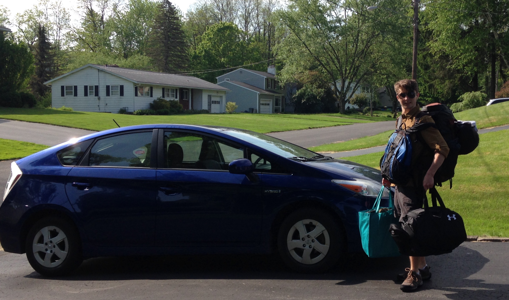

Departure, and Planning
On friday Mike and I left Syracuse and headed to Rochester to move into his appartment. He'll be staying there next year, and being there allowed him to settle some details with the new roomate and the old.
I took a nice nap on Saturday evening, in a deep sleep. Mike woke me after two hours and said, "Tom it's seven thirty," then I very groggily asked, "am or pm?"
Mike told me gently, "pm." I retorted with a scoff of incredulity and immediatly turned over and returned to sleep for another half an hour. I don't remember the interaction, but according to Mike it was pretty strange. My half-asleep self is apparantly pretty snooty.
Tomorrow we'll head out for the Allegheny National Forest, and head towards a campground we saw on freecampsites.net. It looks like we'll be able to have a stream nearby, which is good.